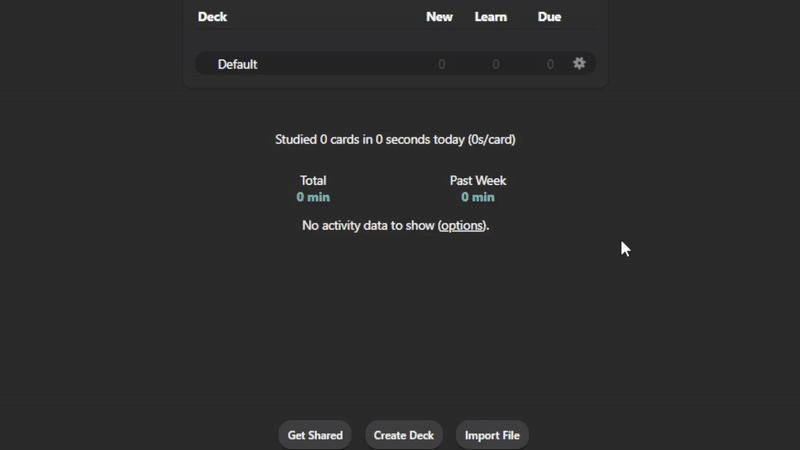
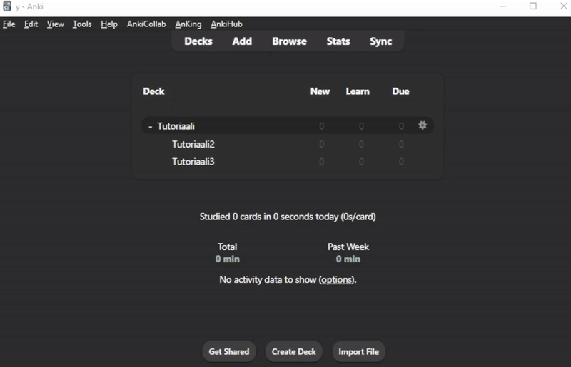
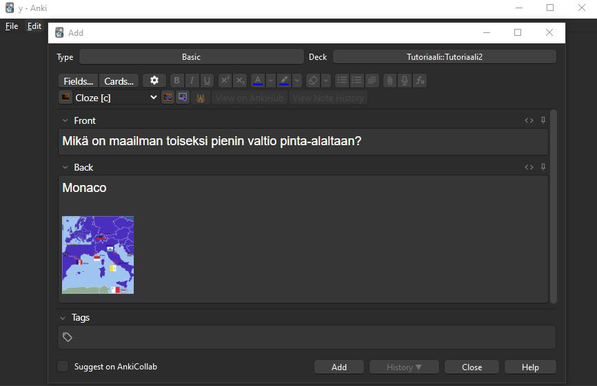
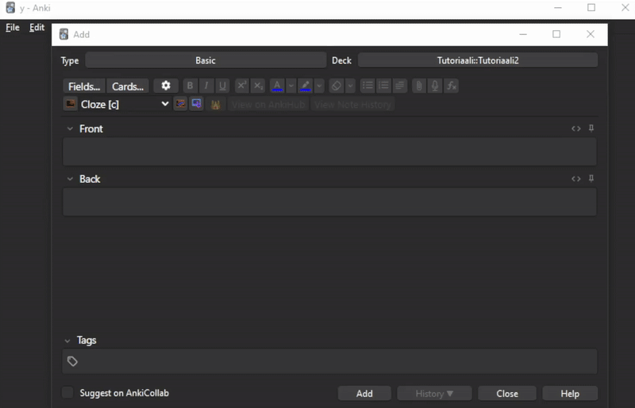
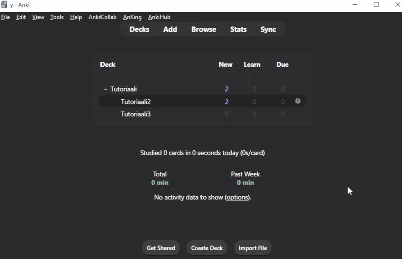
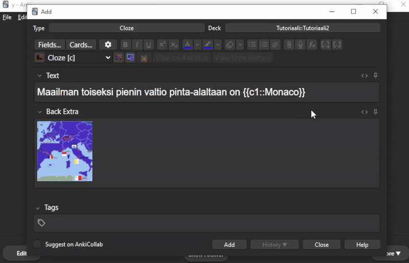
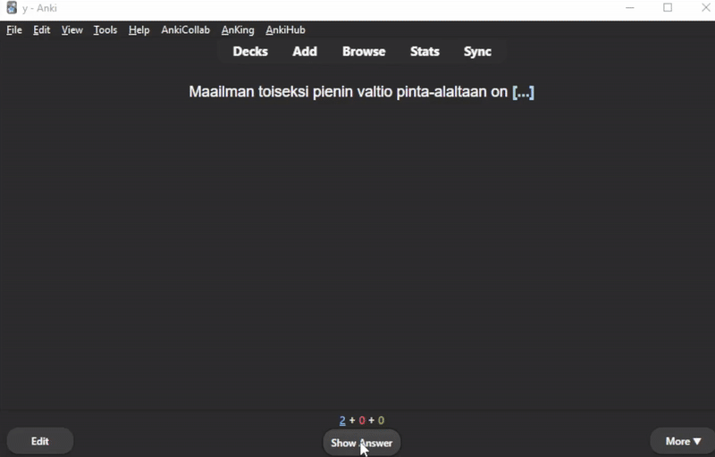
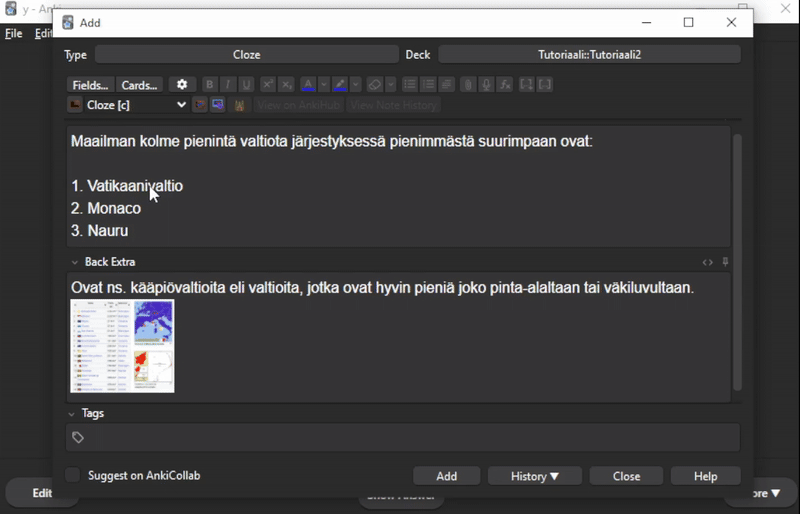
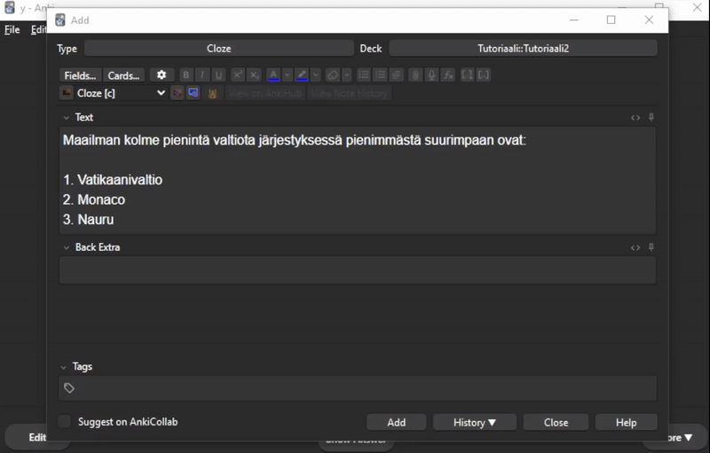
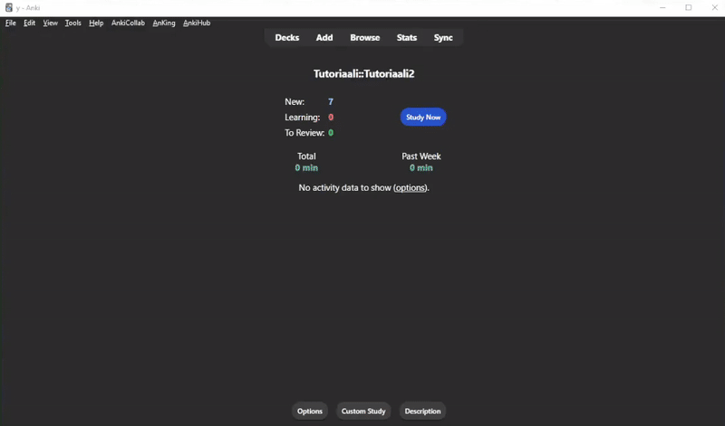

Chapter 4 Korttien luominen ja organisointi
Nyt kun olet asentanut Ankin, käydään läpi pakkojen ja korttien luomisen perusteet sekä niiden jaottelun perusperiaatteet.
4.1 Collection, Deck, Subdeck, Note, Card, Tag, Subtag ???
Terminologia voi olla hieman epäselvää, mutta periaatteet ovat seuraavat:
Collection (Kokoelma) = Kaikki kortit ja pakat mitä Anki-käyttäjällesi on tallennettu
Deck (Pakka) = Kaikki nämä perusteet käydään käytännössä läpi osiossa 3. Tässä on vain yleiskuva siitä, mitä nämä ovat.
Subdeck (Alapakka) = Pakka, jonka avulla emopakan kortteja voidaan erotella.
Note = Kortin pohja, jonka tyylisiksi erilaiset muistikortit luodaan
Card (Kortti) = Itse muistikortti, joka luodaan note-tyypistä
Tag (Tägi) = Korttien organisoimiseen tarkoitettu leima, jonka kortille voi antaa.
Subtag (Alatägi) = Tägi, jonka avulla ylätägin kortteja voidaan erotella
4.2 Pakan luominen
Kun avaa Ankin ensimmäistä kertaa, sinulla on vain yksi pakka, joka on nimeltään “Default”.
Jos haluat luoda uuden pakan, voit tehdä sen klikkaamalla “Create Deck” -painiketta.
Pakan nimi voi olla mitä haluat, mutta suosittelen nimeämään sen opiskelemalle aiheellesi sopivaksi. (Huom. Default-pakka muuttuu uudeksi pakaksesi tässä alkuvaiheessa)

4.3 Alapakkojen luominen
Yhden emopakan alla kortteja voi erotella aihepiireittäin omiin alapakkoihinsa. Tämä auttaa, kun haluaa opiskella hieman erilaisia aiheita erikseen.
Monet esimerkiksi jakavat yhden kurssin kortit aina luennoittain eri alapakkoihin.
En itse tosin enää käytä alapakkoja, koska tägien avulla kortit voidaan organisoida paljon tehokkaammin.
Alapakkoja voi luoda kahdella tavalla:
raahaamalla uuden pakan emopakan päälle
kirjoittamalla uuden pakan nimeksi emopakka::alapakka (voi jatkaa vielä eteenpäin esim. emopakka::alapakka::alapakka::alapakka::…)
4.4 Korttien luominen
Kysymys-vastaus-paria kutsutaan kortiksi (card). Se on hyvin samanlainen kuin fyysinen muistikortti eli paperi, jonka toisella puolella on kysymys ja toisella vastaus.
Se pohja, jonka tyylisiksi erilaiset kortit luodaan, on nimeltään note type.
- Ankista natiivistikin löytyvä “Basic” on yksinkertainen kortti, jossa on vain kysymys ja vastaus. Voi myös luoda Basic (and reversed card), jolloin luodaan kaksi korttia kirjoitetusta teksistä: etu -> taka ja taka -> etu
- “Cloze” on kortti, jossa on teksti, josta on poistettu joitakin sanoja. Kortin vastaus on piilotetut sanat. Tämä on yleisimmin käyttämäni korttityyppi ja Ranki pääasiassa sisältää vain näitä.
- “Image occlusion” -notella pystyy piilottamaan osia kuvista; mahtava tapa opiskella esim. anatomiaa
Jos lataat jonkin pakan, jossa on uusia notetyyppejä, voit sen jälkeen luoda niitä myös itse. Esim. Rankin tai kappaleessa 5 tarjotun harjoituspakan ladattuasi pystyt myös itse käyttää AnKingOverhaul-pohjaa.
4.4.1 Basic-kortti
Luodaan aluksi Basic-tyyppinen kortti. En itse käytä näitä kovinkaan paljoa enää, mutta jopa jo tällä peruskorttityypillä pääsee oikeasti hyvin pitkälle.
Korttien luominen tapahtuu klikkaamalla “Add” -painiketta, valitsemalla pakan johon haluaa korttien menevän ja valitsemalla Type-valikosta haluamasi note-tyypin.
Kun painaa Add (Lisää) -painiketta, kortti luodaan ja se siirtyy pakkaasi.

Basic-notetyypillä voi luoda ns. klassisen muistikortin. Front (etupuoli) -kohtaan kirjoitetaan kysymys tai selitettävä termi. Back (kääntöpuoli) -kohtaan oikea vastaus ja esim. selittäviä kuvia luentodioista.

4.4.2 Cloze-kortti
Luodaan seuraavaksi Cloze-tyyppinen kortti. Suurin osa tekemistäni korteista on nykyään tämän tyyppisiä ja suositteleen vahvasti opettelemaan näiden käytön.
Tarkalleen ottaen en käytä vanilja Cloze-notetyyppiä koskaan, vaan käytän AnKingOverhaul-korttipohjaa, joka on käytännössä Cloze-kortti steroideilla. Kts. AnKingOverhaul-tutoriaali [täältä].
Cloze-kortti luodaan kirjoittamalla tekstiä etupuolella ja painamalla […] tai […+] -painiketta, joilla osa tekstistä piilotetaan.

Kuten huomaat, niin Cloze-kortin rakenne on hieman erilainen kuin Basic-kortin. Cloze-kortissa kysymys on jokin sana/lause, joka on piilotettu. Kääntöpuolella piilotettu osa paljastuu ja myös mahdollinen extra-teksti vapautuu luettavaksi.

Clozeja voi yhdessä kortissa olla useita. Tässä tapauksessa tulee painaa […+] -painiketta, jolloin seuraavaksi piilotettava osa saa yhden isomman arvon clozelleen. Tämä cloze piilotetaan eri kerralla. Samasta notesta siis rakentuu niin monta korttia kuin numeroa clozeissa.

Näin kortti toimii:

Saman clozenumeron alla voi myös olla useita piilotettuja kohtia. Tämä on hyödyllistä, kun haluaa opiskella esim. listoja ulkoa.

Listan voi myös erotella aikaisempaan tyyliin useaan clozeen, jotka kysytään erikseen.

Myöhemmin voi vielä opetella luomaan ns. Cloze one-by-one-kortteja, joiden tekemiseen vaatii AnKingOverhaul-korttipohjan (kts. [AnkingOverhaul-tutoriaali])
4.4.3 Image Occlusion Enhanced-kortti
Image Occlusion-kortit ovat kortteja, joissa on kuva, josta on piilotettu osa. Kortin vastaus on piilotetun osan alla.
Suosittelen käyttämään Image Occlusion Enhanced-korttipohjaa, joka mahdollistaa Image Occlusion-tyylin tehokkaaman käytön. Tämän saa käyttöönsä, kun lataa Image Occlusion Enhanced-lisäosan (kts. Asetukset). Tässä on korttipohjalle Ankingin opetusvideo
Korttien luominen on helppoa. Ota snipping toolilla kuva tai kopioi jokin kuva clipboardillesi. Paina sen jälkeen Add Image Occlusion -painiketta. Tämän jälkeen voit peittää kuvasta haluamasi osiot.
Lopuksi voit valita kumman tyylisiä kortteja haluat luoda. Hide All, Guess One tarkoittaa, että korttia kerratessasi kaikki laatikot ovat kuvassa samalla kerralla, mutta vain yhtä laatikkoa kysytään (eri värinen). Hide One, Guess One tarkoittaa, että korttia kerratessasi vain yksi laatikoista on samaan aikaan kuvan edessä ja vain kyseistä laatikkoa kysytään sillä kerralla.

Korttia voi myöhemmin muokata ja lisätä siihen selityksiä ja vaikka lisää kuvia samasta aiheesta (yleensä Extra-kenttiin)
- Tykkään itse tehdä usein anatomiaan liittyvistä korteista Hide All, Guess One -tyyppisiä kortteja. Tällöin lisään myös Sources-kenttään alkuperäisen kuvan, jotta korttia kerratessa voin nopeasti selata alaspäin ja nähdä myös muiden laatikoiden alla olevat vastaukset.

- Myöhemmin voi vielä opetella luomaan ns. Image Occlusion one-by-one-kortteja, joiden tekemiseen vaatii AnKingOverhaul-korttipohjan ja Closet for anki-lisäosan (kts. [AnkingOverhaul-tutoriaali])
4.5 Tagit
Saman ja jopa eri pakkojen välillä kortteja voi luokitella tägien avulla. Esimerkiksi [Ranki] on jaoteltu pelkästään tägien avulla.
- Tägien hyöty verrattuna alapakkoihin on se, että yksi ja sama kortti voi olla useissa eri kokonaisuuksissa sen mukaan, mitä tägeja siinä on. Etsimällä haluamansa tägin voi opiskella kyseisen tägin kortteja.
- Taas alapakasta löytyvää tägitöntä korttia ei voi löytyä mistään muualta kuin vain siitä alapakasta, jossa se on. Jos esimerkiksi olet tehnyt kortin Koulu::Kurssi1::Luento1 -alapakan alle, mutta aihetta käsitellään myös Kurssilla 2 luennolla 3, et pystyisi opiskelemaan tätä samaa korttia molemmista alapakoista, sillä yksi kortti voi olla vain yhdessä pakassa.
- Jos kaikki korttisi taas ovat Koulu-emopakan alla ja jaottelet kortin sen sisällä tägin mukaan, voisi kortti olla Koulu::Kurssi1::Luento1 -tägin alla sekä Koulu::Kurssi2::Luento3 -tägin alla, jolloin samasta aiheesta ei tarvitse tehdä uutta korttia, jos haluat liittää sen uuden kurssin korttikokonaisuuden alle.
Tägien avulla voit myös helposti suspendaa (hyllyttää) ja unsuspendaa kortteja, joita et halua/haluat pitää kertauskierrossasi. Pystyt myös luomaan suodatettuja pakkoja, joiden avulla voit mm. päntätä kortteja ennen tenttiä, jos siltä tuntuu (pänttääminen juuri ennen tenttiä ei kuitenkaan ole Ankin pääasiallinen käyttötarkoitus).
- Kts. Filtered-pakkojen opetusvideo AnKingilta
Korttien tägäämisen periaatteet ovat seuraavat:
- Kortilla voi olla emotagi ja sen alla alatägejä. Alatägit erotellaan emotägistä kahdella kaksoispisteellä. Esimerkiksi Emopakka::Alapakka::Alapakka1
- Periaate on siis sama kuin emopakoilla ja alapakoilla
- Kortteja voi tägätä joko suoraan niitä luodessa tai myöhemmin niitä editoidessa. Browse-näkymästä voi myös tägätä useita kortteja kerralla (voi myös poistaa tägejä)
- HUOM! Tägien nimissä ei voi olla välilyöntiä, käytä alaviivoja niiden tilalla. Esimerkiksi: Koulu::Kurssi1::Pienimmät_valtiot